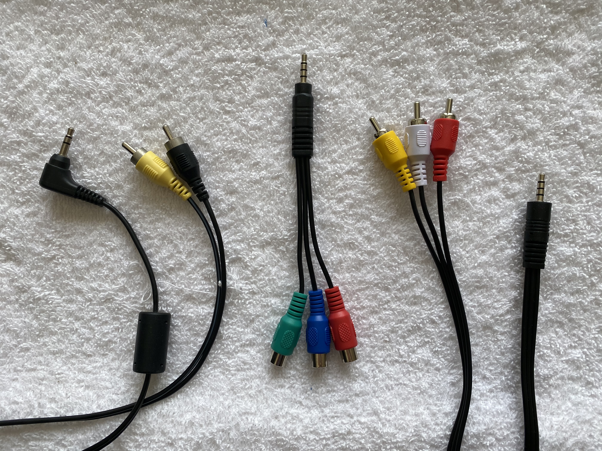

认识线缆之前，先了解一个拗口的概念
关于模拟音频信号的传输，常说的有平衡信号和非平衡信号。 
平衡信号的好处是抗干扰，这是通过同时传输相位相反的两路信号达成的（干扰总归没办法生成相位相反的两个信号吧？）。 传输一路模拟电信号，必须2根导线，两路信号共享地线，所以就需要三根导线。
 非平衡信号相对简单了，不需要反相位差分信号，那么两根导线就可以了。
非平衡信号相对简单了，不需要反相位差分信号，那么两根导线就可以了。
说到这里，需要提一下立体声（两路声音，左右声道）。传输立体声信号可以通过
两根非平衡信号线（2根2芯），比如RCA音频信号线，下面讨论
也可以通过一根平衡信号线（1根3芯），但是这两种方法最终在接收端得到的都是“非平衡信号“。一些只有单口的电子乐器使用，比如Yamaha dd75.
第三种办法就是通过两根平衡信号线（2根3芯），这样接收端得到的就是平衡的立体声信号的。一些配置有所有省道接口的电子乐器使用，比如Roland 电鼓音源主输出口。
上面三种情况，都是传输一对立体声信号，差别就是中间线缆是不是足够抗干扰。
常见的接头（仅做笔记使用，借用各种网图）
TRS
TipRingSleeve的缩写命名，有两种物理规格，3.5mm（1/8inch）和6.35mm（1/4inch）。两种规格可以轻松转换。

小的常用于耳机接口（被苹果设备淘汰），大的常用于电子乐器。 通过观察接头的绝缘条的数量，可以区分线缆内部的芯数，进而定义用途。
耳机接头，3.5mmTRS
常见的有两个绝缘条（分成3个部分，3芯）和三个绝缘条的（分成4个部分，4芯），两芯或者五芯的3.5mmTRS至今我没有见过。
前者常见于纯音乐用户的耳机，比如监听耳机。4芯常用于带有麦克风或者线控的耳机。4芯也常称为TRRS（因为2个ring了），还有2个现行标准， CTIA(Cellular Telecommunications and Internet Association)和OMTP (Open Mobile Terminal Platform)，如图可见 3.5mmTRS由于不用于长线传输，所以基本上就是非平衡信号立体声信号（1根3芯）
3.5mmTRS由于不用于长线传输，所以基本上就是非平衡信号立体声信号（1根3芯）
选购线材的时候，由于上述标准的问题，市面上有好多种转接头，傻傻分不清楚
-
场景0:最常见的3.5mmTRS连接线（中间花线）。两头都是三芯3.5mmTRS
-
场景1:手机耳机接传统桌面电脑 (左一黑)。母头是TRRS 4芯，公头2个都是3芯，分别用于麦克风和耳机。由于上述TRRS两个标准的问题，这类转接头不能只看外观，需要看产品说明，分清楚适配的标准。 有一篇知乎的文章https://zhuanlan.zhihu.com/p/66739179，作者先试错，再研究原理。 其实作者这三根线是对应不同用途的，文中线缆A和C就分别是两种标准的转接头，都可以用于手机耳机接电脑，只是适配不同标准的手机耳机而已。线缆B并不是这个用途的接头，而是手机耳机一分二，情侣听歌用，当然也只是适配单一标准。 两个标准可以通过在母头这边叠加另外一根标准切换线解决（原理如上图，就是交叉输入输出的麦克风和底线），市面有售。
-
场景2:苹果手机（通过lingtning转3.5，提供3.5mm接口）接外接麦克风，或者直接从电鼓取信号（右一白）

场景3中，对于适配只有lightning接口的苹果手机，可以通过数字模拟转换线搭配使用。电子乐器的录音，目前流行的做法是购买音频接口（声卡），声卡输出的数字信号（usb/usb-c接口），直接接入电脑或者手机。其实还有一种比较经济的接法，就是把电子乐器的模拟信号直接输出给麦克风接口，如下图接法。

电子乐器接头，6.35mmTRS
电子乐器主要使用6.35mmTRS互联音频信号输入输出。 常见有两芯和三芯（我没有见过4芯的6.35mmTRS，貌似没人用这个线做线控）

-
场景1: 电鼓部件之间的互联
电鼓部件如果是单触发，那么只要两芯6.35TRS即可，比如底鼓或者踩镲控制器(上图左)。 如果部件是双触发，那么就需要三芯6.35TRS（上图右，提供两路信号）。 还有的部件是三触发，那么通常需要2根6.35TRS线缆，其中至少一根是三芯。购买线缆需要注意
-
场景2: 电鼓/电钢琴的立体声信号输出
对于配置两个插孔的立体声信号输出的电子乐器，普遍可以提供立体声平衡信号输出（2根3芯），立体声非平衡输出更不用担心（2根2芯）相当于平衡信号缺失一路反相信号，不影响传输。 但是对于单一插孔输出的情况（比如Yamaha dd75），输出信号只可能是单声道平衡信号或者立体声非平衡信号（事实是后者），因为没有使用罕见的4芯线缆。
-
场景3: 电吉他，电贝司的单声道信号输出 这个比较确定了，单根6.35mmTRS，单声道非平衡信号（2芯）。电吉他电贝斯发声原理决定这类乐器输出阻抗比较高（高阻乐器），它们对输出的后级单元有特殊的电气需求，后续有进一步讨论。
场景4: 动圈麦克风 动圈麦克风的输入，需使用平衡信号线。
XLR
俗称卡农头，最初名字来源于Cannon公司的产品，Cannon X，后续升级了卡扣Latch，然后升级了橡胶Rubber，最后定型后简称XLR。这也是一种三芯线缆（其他芯数少见），所以可以传输立体声非平衡信号或者单声道平衡信号。
-
场景1:电容麦克风
这是最常见的XLR的应用。电容麦克风需要使用-48v外部供电，所以必须是三芯以上线缆。 剩下2芯，就只能传输非平衡信号了。因此可以确定，电容麦克风的线，不能很长，要就近接入调音台。
-
场景2: 其他应用，用于传输平衡信号，常见有音响系统之间的互联。
有几个优势，比如卡扣稳定，公母带有方向性，三芯平衡信号抗干扰。
RCA
这个只有两芯线缆，曾经各种音视频播放器常用接头，老款电视、音箱常见配置。 常见RCA和3.5mmTRS转接。 接头的对接转换和线芯结法就不研究了，从用户的角度，认知就够了，不需要生产。 
关于电吉他和电鼓，电子键盘的差异
首先，电吉他是通过电感拾音生成模拟电信号的，这与电鼓和电子键盘提前采样录制不同。 电感所产生的感抗（阻抗分量之一），与识取频率成正比，也就是说电吉他的输出阻抗是变量，而且阻抗比较高（高阻乐器）。 由于阻抗匹配高进低出（输入阻抗高于前级输出阻抗）的匹配原则，吉他需要对应高阻输入。这个原则有几个常见的实践注意事项：
1. 电吉他录音的声卡，需要有高阻接口，一般以吉他🎸符号标示，或者配置一个阻抗切换开关，一般是inst/line开关
2. 电吉他一般有单独的电吉他音箱，但是对于需要接入调音台之后才输出到音响到场景，往往需要先接DI盒（把信号变成低阻平衡信号）才行。
3. 吉他常用的效果器，也需要考虑高阻输入低阻输出的问题。
关于阻抗匹配
这部分是不严谨的原理，没有定量计算。 信号的前后级连接，相当于电路串联进来新的电阻（新增阻抗，包括容抗），根据串联电路电压分配的基本原理，负载两端的电压正比于负载的电阻。因此当后级阻抗比较小，而且前级电阻是个变量，导致后级分配到的电压（承载信号）占总电压的比率变化。这体现在听觉上，就是不同频率的声音通过传输后，发生了不同比率的形变，也就是不同频率的声音振幅被压缩了不同的比率。由于声音是多个频率，谐波相互组合的结果，因此这样的信号在后级听感上是失真的。 但是如果后级设备阻抗远远大于前级变化的阻抗，这样后级得到的电压在不同频率的差异就很小，也就不失真了。 这两个文章解释得有图有道理，可以参考https://zhuanlan.zhihu.com/p/72030727和 https://zhuanlan.zhihu.com/p/37196399
购买电声乐器的辅助设备
一般电声乐器带耳机就能自娱自乐了。 等玩儿的差不多了，表演欲上来，就会考虑直播、录音和现场，那么购买声卡的时候，就可以根据上述两个内容来选购线材和声卡功能
* 如果是玩吉他，高阻输入功能的音频接口（声卡），DI盒都需要考虑
* 如果玩电鼓、电子键盘，立体声输入需要考虑
* 连接各种音箱，需要考虑音箱输入接口以及线缆传输干扰，尤其存在较长距离连接的情况。 3.5mm线缆以及各种二合一线缆就基本可以排除了，它们只适合末端连接。
最后，用yamaha 多用途音频接口AG03为例，它配置了上述多种接口，方便多种应用场景和线缆的接入。